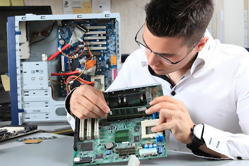

Empresa especializada em manutenção e reparos de maquinas danificadas.

A manutenção adequada de um hardware é tão importante quanto a de um software. Ela é caracterizada por limpeza, identificação de falhas e suas origens, diagnóstico de peças que não estão mais desempenhando como o desejado e, em alguns casos, substituição de componentes.
conheças nossos serviços abaixo:
*Manutenção
*Anlises e reparos
Intalação de sistemas e App
O que é manutenção preventiva hardware?
A manutenção inclui hardware e software do computador. Ambos são muito importantes e influenciarão decisivamente o funcionamento do sistema. Os vários tipos de manutenção podem funcionar simultaneamente